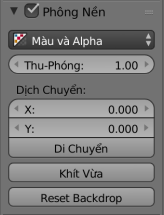

Properties¶
Header¶

Compositing specific options.
- Use Nodes
- Enables basic compositing set up with a Render Layer Node and a Composite Node.
- Backdrop
Enables the use of a backdrop using a Viewer Node.
- Backdrop Channels
- See below.
- Auto Render
- Re-render and composite changed layer when edits to the 3D scene are made.
Backdrop¶
Reference
| Panel: |
|---|

Backdrop options.
- Backdrop Channels
- Set the image to be displayed with Color, Color and Alpha, or just Alpha.
- Zoom
- Sets how big the backdrop image is.
- Offset
- Change the screen space position of the backdrop, or click the Move button, or shortcut Alt-MMB to manually move it.
- Fit
- Automatically scales the backdrop to fit the size of the Node editor.
Performance¶
Reference
| Panel: |
|---|

Performance settings.
This panel help you to tweak the performance of the compositor.
- Render
- Sets the quality when doing the final render.
- Edit
- Sets the quality when making edits.
- Chunk Size
- Max size of a title (smaller values give a better distribution of multiple threads, but more overhead).
- OpenCL
- This allows the use of an OpenCL platform to aid in rendering. Generally, this should be enabled unless your hardware does not have good OpenCL support.
- Buffer Groups
- Enables buffering of group nodes to increase the speed at the cost of more memory.
- Two Pass
- Use two pass execution during editing: the first pass calculates fast nodes, the second pass calculates all nodes.
- Viewer Border
- This allows to set an area of interest for the backdrop and preview. The border is started by Ctrl-B and finished by selection of a rectangular area. Ctrl-Alt-B discards the border back to a full preview. This is only a preview option, final compositing during a render ignores this border.
- Highlight
- Highlights the nodes that are being calculated by the compositor.